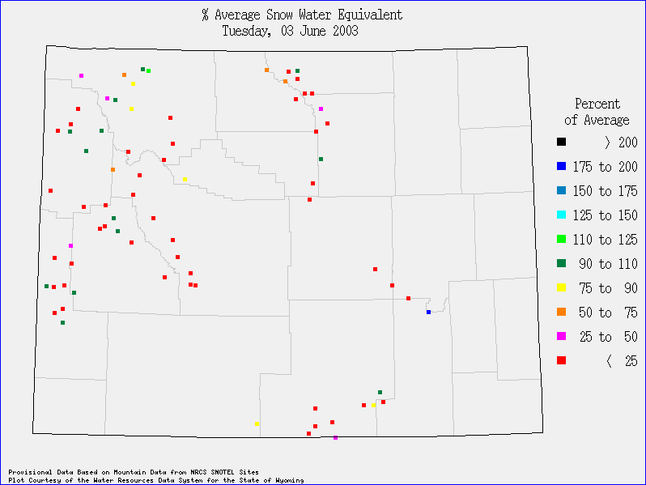

| research |
| home page |
|  | INVESTOR INFORMATION Click here to get up-to-date investor information about our company. . April 22, 2002 Pumatech files patent infringement suit against Extended Systems, Inc. 0 software, featuring support for Pocket PC 2002 handhelds. April 1, 2002 Pumatech announces Enterprise IntellisyncTM, Second Edition software for Real-time Enterprise Synchronization. |
|